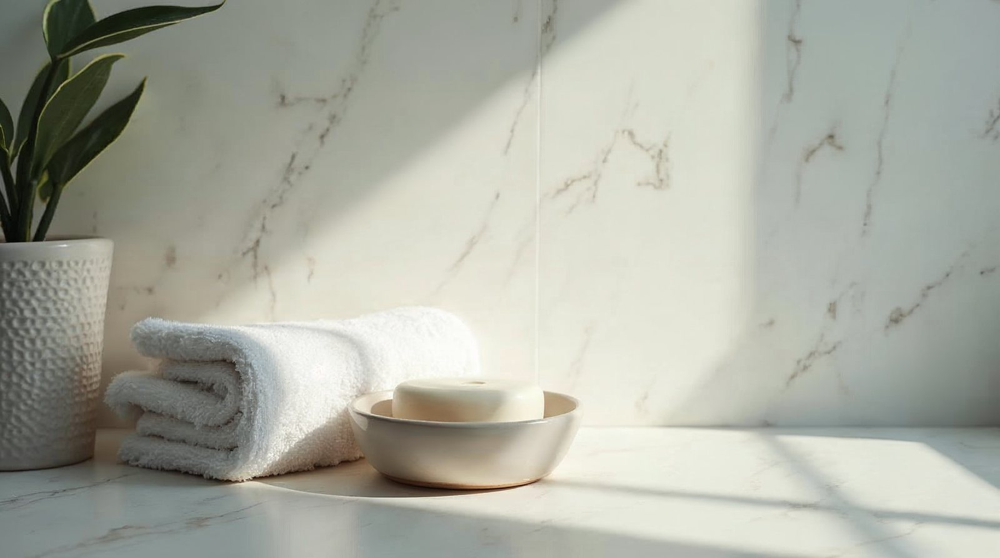
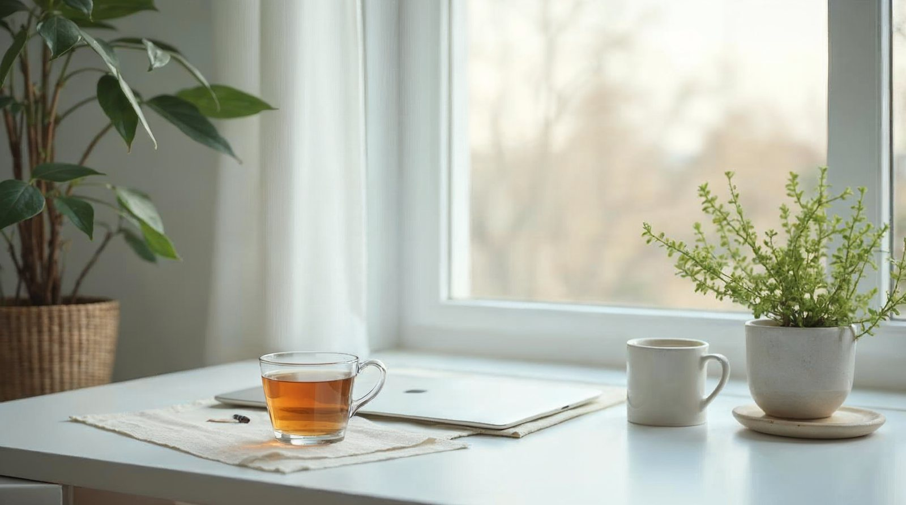
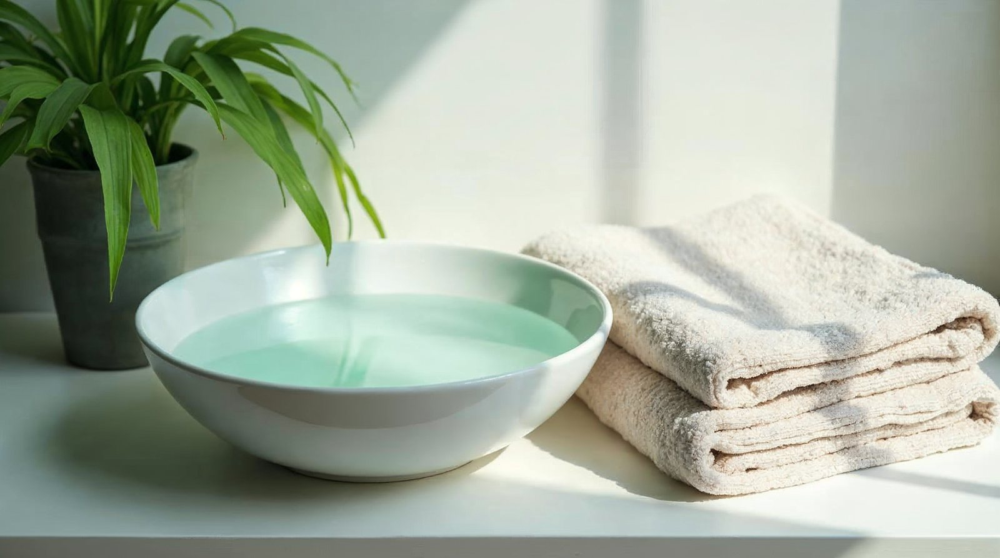
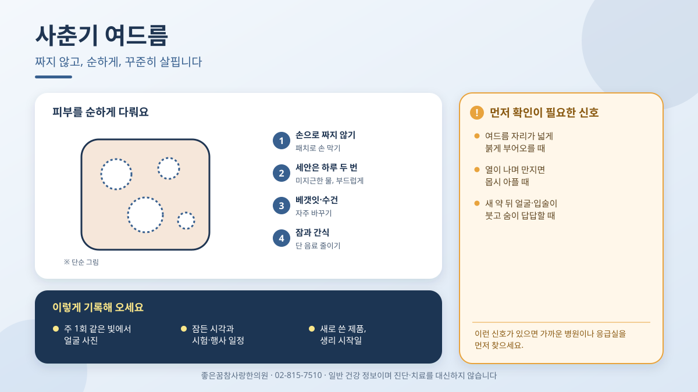

이종호 한의사 감수좋은꿈참사랑한의원 대표원장 (한의사 면허번호 19769)발행 2026-11-26 · 수정 2026-11-26
이 글의 차례
아침 등굣길에 아이가 거울 앞에서 한참을 머뭅니다. 앞머리를 내려 이마를 가리고, 마스크를 코 위까지 올립니다. 어젯밤 손으로 짠 자리에는 붉은 자국이 남아 있습니다. "엄마, 나 얼굴 왜 이래?" 하는 목소리에 짜증과 속상함이 반씩 섞여 있습니다.
사춘기 여드름은 너무 흔해서 "그 나이 땐 다 나" 하고 넘기기 쉽습니다. 하지만 거울 앞에서 보내는 아이의 시간을 보면, 피부의 문제는 곧 마음의 문제이기도 하다는 것을 느낍니다. 친구들 앞에서 얼굴을 들기 싫어지고, 사진 찍기를 피하게 되기도 합니다.
여드름은 대부분 시간이 지나며 잦아들지만, 그 사이를 어떻게 지나느냐에 따라 흉터와 자국이 남는 정도가 달라집니다. 일찍부터 바르게 다루는 법을 알아 두면, 아이도 자기 피부를 덜 미워하게 됩니다.
이 글에서는 사춘기에 왜 여드름이 생기는지, 어떤 습관이 여드름을 키우는지, 집에서 해 볼 수 있는 관리와 피부과·한의원에서 함께 살피는 부분을 차례로 정리해 보겠습니다.
사춘기 여드름은 어떤 모습인가요
사춘기 여드름은 대개 이마와 코, 턱을 잇는 얼굴 가운데에서 시작합니다. 처음에는 모공이 막혀 하얗거나 까맣게 올라오는 좁쌀 같은 여드름이 많고, 시간이 지나며 붉게 부어오르는 염증성 여드름이 섞이기도 합니다.
- 좁쌀 여드름: 피부 아래 하얗게 만져지는 작은 알갱이
- 블랙헤드: 모공 입구가 까맣게 보이는 것
- 붉은 여드름: 염증이 생겨 붉고 누르면 아픈 것
- 고름 여드름: 가운데 노란 고름이 차오른 것
- 결절·낭종: 피부 깊숙이 단단하고 크게 만져지는 것
여드름은 얼굴뿐 아니라 가슴과 등에도 생길 수 있습니다. 깊고 큰 여드름이 많거나 흉터가 생기기 시작했다면 피부과 진료를 일찍 받아 보시는 것이 좋습니다.
왜 사춘기에 여드름이 생길까요
사춘기가 되면 성호르몬이 늘어나면서 피지샘이 커지고 피지 분비가 많아집니다. 남학생과 여학생 모두에게 일어나는 변화입니다. 피지가 많아진 모공 입구에 각질이 쌓이면 모공이 막히고, 그 안에서 여드름균이 늘어나면서 염증이 생깁니다.
여기에 생활의 조건이 겹치면 여드름이 더 쉽게 올라옵니다. 시험 기간에 잠이 줄면 피부의 회복이 더디어지고, 스트레스는 피지 분비를 늘리는 쪽으로 몸을 기울입니다. 단 음료와 과자, 밀가루 간식이 잦은 식사가 여드름을 키운다고 느끼는 경우도 있습니다.
손으로 얼굴을 자주 만지는 습관, 앞머리가 이마를 덮고 있는 것, 오래 쓴 마스크와 베갯잇, 두꺼운 선크림이나 화장품도 모공을 막는 데 보탬이 됩니다. 여학생은 생리 전에 여드름이 한꺼번에 올라오는 흐름을 보이기도 합니다.
한의학에서는 사춘기를 몸에 열과 기운이 왕성해지는 시기로 봅니다. 이 열이 위로 올라 얼굴에 몰리거나, 기름진 음식과 단것으로 속에 열과 습이 쌓이면 피부로 드러난다고 설명합니다. 변비가 있거나 얼굴이 쉽게 달아오르는 아이에게서 이런 모습이 자주 보입니다.
반대로 얼굴은 번들거리는데 손발이 차고 쉽게 지치는 아이도 있습니다. 같은 여드름이라도 몸의 바탕이 다르면 살피는 방향이 달라지기 때문에, 진료실에서는 얼굴만이 아니라 잠과 소화, 대변, 손발의 온도까지 함께 여쭙니다.

손으로 짜면 왜 안 될까요
여드름을 손으로 짜면 그 순간은 시원하지만, 모공 안의 염증이 피부 깊은 쪽으로 밀려 들어가 붉은 자국이 오래 남고 흉터가 될 수 있습니다. 손톱 밑의 세균이 들어가 염증이 더 커지기도 합니다.
특히 코와 윗입술 주변의 여드름은 함부로 짜지 않도록 아이에게 일러 주세요. 고름이 꽉 찬 여드름이 신경 쓰인다면, 피부과에서 깨끗한 도구로 처치를 받는 편이 자국을 줄이는 데 도움이 됩니다.
짜고 싶은 마음이 들 때는 손 대신 여드름 패치를 붙여 두는 것도 방법입니다. 손이 가는 것을 막아 주고, 진물을 흡수해 줍니다.
공부하다 무심코 얼굴로 손이 간다면, 손이 가는 순간을 알아차리는 연습부터 해 보세요. 책상 위에 작은 쪽지를 붙여 두거나, 손을 바쁘게 할 펜이나 말랑한 공을 곁에 두는 것도 방법입니다. 습관은 꾸짖는다고 바뀌기보다, 다른 습관으로 바꿔 끼울 때 조금씩 달라집니다.
비슷해 보이지만 다른 것들
얼굴에 올라오는 것이 모두 여드름은 아닙니다. 나눠 보면 관리 방향이 달라집니다.
- 지루성 피부염: 코 옆과 눈썹 사이가 붉고 각질이 일어납니다.
- 모낭염: 면도나 마찰 자리에 고름이 잡힌 작은 뾰루지가 생깁니다.
- 접촉 피부염: 새 화장품이나 세안제를 쓴 뒤 붉고 가렵습니다.
- 비립종: 눈 주위에 하얗고 단단한 작은 알갱이가 오래 머뭅니다.
새로 쓴 제품 뒤에 갑자기 붉고 가렵게 올라왔다면 먼저 그 제품을 멈추고 지켜봅니다. 가려움이 크면 여드름보다 다른 피부 문제를 먼저 의심해 봅니다.
운동 뒤 땀과 마스크는 어떻게 다룰까요
체육 시간이나 운동 뒤에 흘린 땀을 그대로 두면 피지와 섞여 모공을 막기 쉽습니다. 운동이 끝나면 물로 얼굴을 한 번 헹구거나, 깨끗한 수건으로 꾹꾹 눌러 땀을 닦아 주세요. 문지르기보다 눌러 닦는 쪽이 피부에 덜 자극이 됩니다.
마스크를 오래 쓰는 날에는 마스크 안쪽이 축축해지면서 턱과 볼에 여드름이 늘어나기도 합니다. 여분의 마스크를 챙겨 두었다가 점심 뒤에 바꿔 쓰면 한결 편하게 지낼 수 있습니다. 운동복과 모자, 헤어밴드도 자주 빨아 주세요.
계절도 영향을 줍니다. 여름에는 땀과 피지가 늘어 여드름이 올라오기 쉽고, 겨울에는 건조해진 피부를 세게 씻거나 두꺼운 크림을 바르면서 모공이 막히기도 합니다. 계절이 바뀔 때마다 세안제와 보습제의 무게를 조금씩 바꿔 주는 것이 좋습니다.
진료실에서 자주 듣는 오해
여드름에 관해서는 친구나 인터넷에서 들은 이야기가 많습니다. 진료실에서 자주 듣는 오해 몇 가지를 정리해 봅니다.
- 얼굴을 자주 씻을수록 좋다: 하루 두 번이면 충분하고, 더 자주 씻으면 피부가 건조해져 오히려 피지가 늘 수 있습니다.
- 여드름에는 보습제를 바르면 안 된다: 기름기 적은 보습제는 피부 장벽을 지켜 줍니다.
- 햇볕에 태우면 여드름이 마른다: 잠깐 덜해 보여도 자국이 진해지고 피부가 두꺼워질 수 있습니다.
- 여드름은 더러워서 생긴다: 피지가 늘어나는 몸의 변화가 주된 이유이지, 아이가 지저분해서가 아닙니다.
스스로 점검해 보세요
아이와 함께 지난 한 달을 떠올리며 체크해 보세요. 여드름을 키우는 생활의 고리를 찾는 데 도움이 됩니다.
- 잠드는 시각이 자정을 넘는 날이 많다
- 단 음료나 과자, 라면을 거의 매일 먹는다
- 공부하면서 턱을 괴거나 얼굴을 자주 만진다
- 여드름을 손으로 짜는 버릇이 있다
- 베갯잇과 수건을 일주일 넘게 바꾸지 않는다
- 세안을 하루 세 번 이상, 세게 문질러 한다
- 변비가 있거나 얼굴이 쉽게 달아오른다
먼저 이렇게 여쭙니다
처음 오시면 아이와 보호자께 이렇게 여쭙니다. 아이가 스스로 대답할 수 있도록 천천히 기다려 드립니다.
- 여드름이 언제부터, 얼굴 어느 자리에 주로 나나요?
- 시험 기간이나 생리 전처럼 심해지는 때가 있나요?
- 세안은 하루 몇 번, 어떤 제품으로 하나요?
- 선크림이나 화장품, 앞머리 스타일은 어떤가요?
- 잠드는 시각과 간식, 배변은 어떤가요?
- 피부과 약이나 연고를 쓰고 있나요?
최근 여드름 때문에 학교생활이나 친구 관계가 불편해졌는지도 조심스럽게 여쭙니다. 가족 가운데 여드름이 심했던 분이 있는지도 여쭙니다. 체질적으로 피지가 많은 집안이라면 관리를 조금 더 일찍, 꾸준히 시작하시는 편이 좋습니다.
일상에서 먼저 해 볼 수 있는 것
여드름 관리는 많이 하는 것보다 꾸준히, 순하게 하는 것이 중요합니다. 아래에서 두세 가지를 골라 한 달 정도 이어 가 보세요.
- 세안은 아침저녁 두 번, 미지근한 물과 순한 세안제로 손끝으로 부드럽게
- 세안 뒤에는 기름기 적은 보습제를 얇게 바르기
- 선크림은 가볍고 모공을 덜 막는 제품으로 고르기
- 베갯잇은 일주일에 두 번, 수건은 매일 바꾸기
- 공부할 때 턱 괴는 습관 줄이기, 휴대폰 화면 자주 닦기
- 단 음료 대신 물, 과자 대신 과일이나 견과류 조금
- 잠드는 시각을 조금씩 앞당기기
피지가 많다고 세게 자주 씻으면 오히려 피부가 건조해지면서 피지를 더 내보내려 할 수 있습니다. 각질 제거 제품이나 스크럽도 자주 쓰면 피부 장벽이 약해지니, 쓰더라도 일주일에 한 번 정도로 줄여 주세요.
앞머리가 이마를 늘 덮고 있다면 집에서는 머리를 넘겨 이마를 쉬게 해 주세요. 머리카락의 기름과 헤어 제품이 이마 여드름을 키우는 경우가 많습니다.
여드름에 좋다는 제품을 한꺼번에 여러 개 바꾸면 무엇이 맞고 무엇이 맞지 않는지 알기 어렵습니다. 새 제품은 한 번에 하나씩, 2주 정도 써 보며 피부의 반응을 지켜본 뒤 다음 것을 더해 주세요. 아이가 쓰는 제품 목록을 휴대폰 메모에 적어 두면 진료실에서도 이야기를 나누기 쉽습니다.

마음도 함께 살펴 주세요
여드름 때문에 아이가 사진을 피하거나, 친구 만나기를 꺼리거나, 거울 앞에서 오래 우울해한다면 피부만큼 마음도 함께 살펴 주셔야 합니다. "그 나이 땐 다 나", "신경 쓰지 마"라는 말은 아이에게 위로가 되지 않는 경우가 많습니다.
대신 "많이 신경 쓰이지? 같이 방법을 찾아보자"라고 아이의 속상함을 먼저 인정해 주세요. 관리를 함께 계획하고, 조금씩 나아지는 것을 같이 확인하는 과정이 아이의 자신감을 지켜 줍니다.
여드름 때문에 화장을 시작하는 여학생도 많습니다. 가리고 싶은 마음은 충분히 이해합니다. 다만 두꺼운 화장은 모공을 더 막을 수 있으니, 가볍게 바르고 집에 오면 바로 순하게 지우는 습관을 함께 익히도록 도와주세요. 화장을 막기보다 지우는 법을 알려 주는 쪽이 아이와 다툼 없이 피부를 지키는 길입니다.
한의원에서 함께 살필 수 있는 경우
- 붉은 여드름이 자꾸 올라오고 얼굴이 쉽게 달아오르는 경우
- 변비가 있거나 기름진 음식 뒤에 여드름이 심해지는 경우
- 시험 기간마다 잠이 줄면서 여드름이 함께 올라오는 경우
- 생리 전후로 턱과 입 주위 여드름이 반복되는 경우
- 피부과 치료를 받으면서 몸의 리듬도 함께 살피고 싶은 경우
좋은꿈참사랑한의원에서는 진찰을 먼저 하고, 그 결과에 따라 생활 관리와 함께 침, 한약 상담 가운데 지금 아이에게 맞는 것을 고릅니다. 한약을 상의할 때는 아이가 쓰고 있는 약과 연고를 모두 확인한 뒤 보호자와 함께 신중하게 정합니다.
피부과에서 처방받은 약은 그대로 이어 가시면 됩니다. 한의원 진료 때문에 약을 멈추지 않고, 깊은 여드름이나 흉터가 걱정되는 경우에는 피부과 진료를 함께 받으시도록 안내해 드립니다.
이렇게 기록해 오시면 상담이 쉬워집니다
한 달 정도, 일주일에 한 번 같은 자리에서 같은 빛으로 얼굴 사진을 찍어 두세요. 아이가 원하지 않으면 날짜와 함께 간단한 메모만 적어도 충분합니다.
- 새로 올라온 여드름의 수와 자리
- 잠든 시각과 시험·행사 같은 일정
- 단 음료, 과자, 기름진 음식을 먹은 날
- 배변 상태
- 여학생이라면 생리 시작일
- 새로 쓰기 시작한 화장품이나 세안제
사진을 나란히 놓고 보면 여드름이 올라오는 흐름과 생활 사이의 연결이 보이기 시작합니다. 아이도 자기 피부가 아주 조금씩 달라지는 것을 눈으로 확인하며 관리를 이어 갈 힘을 얻습니다.

피부와 친해지는 시간
사춘기 여드름은 자라는 몸이 지나가는 길목에서 만나는 경우가 많습니다. 그 길목을 지나는 동안 흉터를 덜 남기고, 아이가 자기 얼굴을 덜 미워하도록 돕는 것이 관리의 목표입니다.
이번 주에는 손으로 짜지 않기와 베갯잇 바꾸기, 이 두 가지부터 시작해 보세요. 다음에 오시면 아이와 함께 사진과 기록을 펼쳐 보며 다음 걸음을 정하겠습니다.
이런 증상은 먼저 확인이 필요합니다
- 여드름 자리가 넓게 붉게 부어오르고 열이 나며 만지면 몹시 아픈 경우
- 새로 먹거나 바르기 시작한 약 뒤에 얼굴과 입술이 붓고 숨이 답답한 경우
이런 신호가 있으면 한의원보다 가까운 병원이나 응급실을 먼저 찾으세요.
함께 읽으면 좋은 글
- 얼굴에 여드름이 자꾸 반복될 때는 잠·식사·주기 중 무엇부터 살피나요?
- 어른이 되어 턱과 볼에 붉고 아픈 여드름이 되풀이되는 성인 여드름은 어떻게 살피나요?
- 코 옆과 눈썹이 붉고 각질이 일어나는 얼굴 지루성 피부염은 어떻게 살피나요?
- 잠이 부족하면 피부가 푸석하고 트러블이 나는 이유는 무엇인가요?
- 아이의 사춘기가 너무 빨리 오는 것 같을 때(성조숙증 걱정), 부모는 무엇을 먼저 확인하나요?

여쭙는 것
- 여드름이 언제부터, 얼굴 어느 자리에 주로 나나요?
- 시험 기간이나 생리 전처럼 심해지는 때가 있나요?
- 세안은 하루 몇 번, 어떤 제품으로 하나요?
생활에서 해 볼 것
- 세안은 아침저녁 두 번, 미지근한 물과 순한 세안제로 손끝으로 부드럽게
- 세안 뒤에는 기름기 적은 보습제를 얇게 바르기
- 선크림은 가볍고 모공을 덜 막는 제품으로 고르기
한의원에서 함께 살필 것
- 붉은 여드름이 자꾸 올라오고 얼굴이 쉽게 달아오르는 경우
- 변비가 있거나 기름진 음식 뒤에 여드름이 심해지는 경우
- 시험 기간마다 잠이 줄면서 여드름이 함께 올라오는 경우
먼저 확인이 필요한 신호
- 여드름 자리가 넓게 붉게 부어오르고 열이 나며 만지면 몹시 아픈 경우
- 새로 먹거나 바르기 시작한 약 뒤에 얼굴과 입술이 붓고 숨이 답답한 경우
한눈에 보는 표
| 구분 | 핵심 |
|---|---|
| 여쭙는 것 | 여드름이 언제부터, 얼굴 어느 자리에 주로 나나요? 시험 기간이나 생리 전처럼 심해지는 때가 있나요? |
| 생활에서 해 볼 것 | 세안은 아침저녁 두 번, 미지근한 물과 순한 세안제로 손끝으로 부드럽게 세안 뒤에는 기름기 적은 보습제를 얇게 바르기 |
| 한의원에서 함께 살필 것 | 붉은 여드름이 자꾸 올라오고 얼굴이 쉽게 달아오르는 경우 변비가 있거나 기름진 음식 뒤에 여드름이 심해지는 경우 |
| 먼저 확인이 필요한 신호 | 여드름 자리가 넓게 붉게 부어오르고 열이 나며 만지면 몹시 아픈 경우 새로 먹거나 바르기 시작한 약 뒤에 얼굴과 입술이 붓고 숨이 답답한 경우 |
자주 묻는 질문
초콜릿이나 우유를 먹으면 여드름이 생기나요?
사람마다 차이가 커서 한 가지 음식을 원인으로 단정하기는 어렵습니다. 기록을 해 보며 특정 음식 뒤에 여드름이 늘어나는 흐름이 보이면 그 음식부터 줄여 보시길 권합니다.
사춘기 여드름은 그냥 두면 저절로 없어지나요?
자라면서 잦아드는 경우가 많지만, 그 사이에 손으로 짜거나 깊은 여드름을 오래 두면 흉터와 자국이 남을 수 있습니다. 순한 관리를 이어 가고, 깊은 여드름은 피부과와 함께 살피시길 권합니다.
남학생도 여드름 관리를 똑같이 하면 되나요?
기본은 같습니다. 남학생은 면도를 시작하면서 턱 주변에 모낭염이 섞이기도 하니, 면도 전 피부를 부드럽게 하고 날을 자주 바꿔 주세요.
피부과 약을 쓰면서 한의원 진료를 받아도 되나요?
함께 받으실 수 있습니다. 쓰고 계신 약을 알려 주시면 그에 맞춰 진료 방향을 정하고, 한약을 상의할 때도 신중하게 확인합니다.
여드름 자국은 언제쯤 옅어지나요?
붉은 자국은 몇 달에 걸쳐 서서히 옅어지는 경우가 많습니다. 자외선은 자국을 진하게 만들 수 있어서 선크림을 꾸준히 바르는 것이 중요합니다.
좋은꿈참사랑한의원은 재진 때 지난번 이야기부터 이어서 여쭙니다. 진료시간과 예약은 오시는 길에서 확인하세요.
어디서 상담받을 수 있나요?
좋은꿈참사랑한의원은 서울 동작구 만양로2길 2 신성빌딩 3층·5층(서울 동작구 상도동, 7호선 상도역 3번 출구 근처)에 있습니다. 한의사 3명(이종호 대표원장, 조영기 수석진료원장, 정원영 진료원장)이 진료합니다. 진료시간은 평일 09:30~20:00(점심 13:00~14:00), 토·일·공휴일 09:30~15:00이며, 방문 전 전화로 확인을 권합니다. 예약은 네이버 예약, 카카오톡 상담, 전화 02-815-7510로 받습니다.
이 글은 일반적인 건강 정보이며 개인의 진단이나 치료를 대신하지 않습니다. 증상이 있거나 복용 중인 약이 있다면 진료를 통해 확인하세요. 치료 효과는 개인마다 다를 수 있습니다.
작성 기준: 일반적으로 알려져 있는 건강 정보를 참고해 정리했습니다(대표원장 감수). 증상 기록은 1~2주 동안 하루 1회, 비슷한 시간에 적어 오시면 지난 상태와 비교하기 쉽습니다.